Curiosities and gameplay, so that we can all enjoy quality gameplay
>About the Game
You are a worker hired by the company. Your job is to collect scrap metal from abandoned and industrialized moons to meet the Company's profit quota. You can use the money you earn to travel to new moons with greater risks and rewards, or you can buy fancy outfits and decorations for your ship. Get to know nature by examining any creature you find to add it to your bestiary. Explore the wonderful outdoors and rummage through the abandoned steel and concrete underground. But never miss your quota.
>Objectives
You're a worker hired by the company. Your job is to collect scrap metal from abandoned and industrialized moons to meet the Company's profit quota. You can use the money you earn to travel to new moons with greater risks and rewards - or you can buy fancy costumes and decorations for your ship. Experiment with nature, analyzing all the creatures you find to add them to your bestiary. Explore the wonderful outdoors and rummage through its abandoned steel and concrete underground. But never lose your quota, and do a good job.
DO YOU KNOW WHAT TO DO?
THEN LET'S GO TO THE MONSTER BITCH
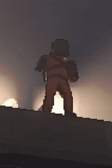
>MONSTERS
>BRACKEN
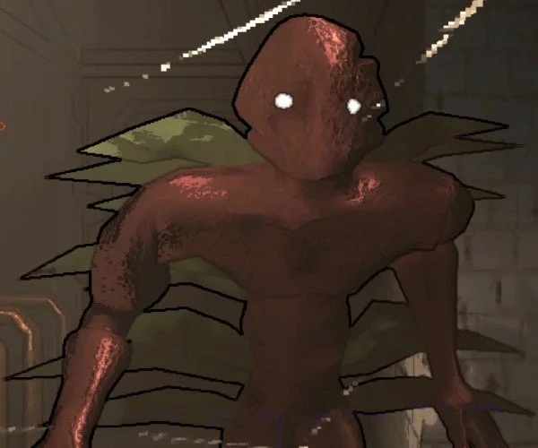
It is a humanoid looking monster with glowing eyes. It is a pretty silent and quiet enemy so you will not hear it coming. It’s recommend that you just stare at it for a second so that it goes away but make sure to keep checking your back. It pauses for a second when you look at it and will disappear if you maintain a good distance between you and it. However, staring at it for too long will make it chase you so run if it starts growling at you.
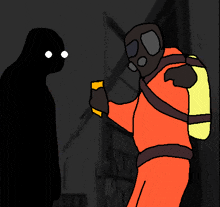
Keep in mind that it doesn’t stop chasing you even after you get away from it so make sure to keep checking behind you. They are known to stalk players for a while before killing them and they usually have a designated room in the map where they would take their victims body making it harder to rescue their corpse.
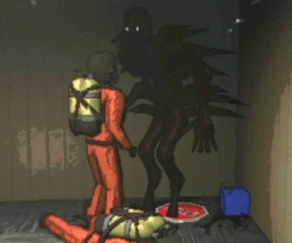
>Hoarding Bug
They will not attack you unless provoked, they are usually near their nest which may include some scrap. They will only attack you if they want your loot or you try to steal theirs from their nest. Do not stay near their nest for too long either which may agitate them. Make sure to leave any scrap that you want someone else to take back to the ship OUTSIDE the building so that they may not steal it, apart from scrap they can also steal your equipment that you may have dropped. I have seen them stealing our flashlights that may be dropped by accident or on death.
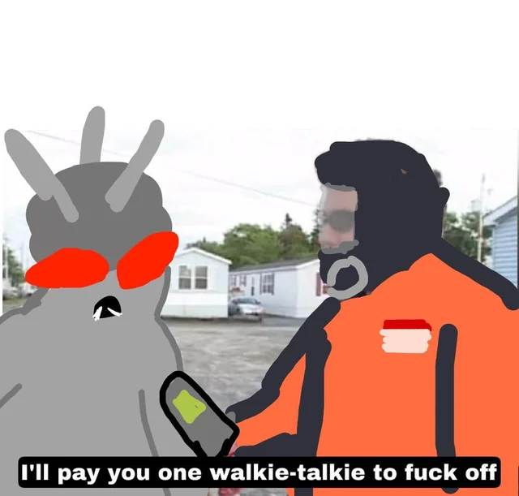
They are usually patrolling an area near their nest and would only attack you if you stay in the area for too long or block their path. They tend to open their wings and start flying when they are aggressive and start attacking players. You can easily kill them with a shovel if you are healthy enough.
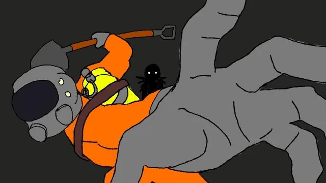
>FOREST KEEPER
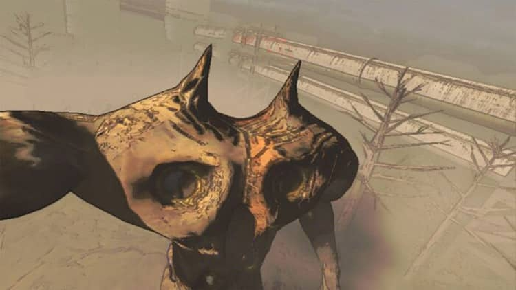
These are giant creatures that can be detected by their loud stomping and height. You can’t outrun them so it’s best that you avoid them by taking shelter to stay out of their line of sight. I have noticed distortion and not being able to use the radio when near them but, can not confirm if it was due to them or something else. You can also stun them to drop a player that they have grabbed, which probably means that stun grenades work on them.
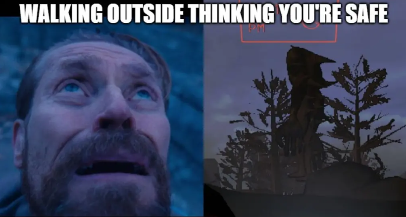
>Coil Head
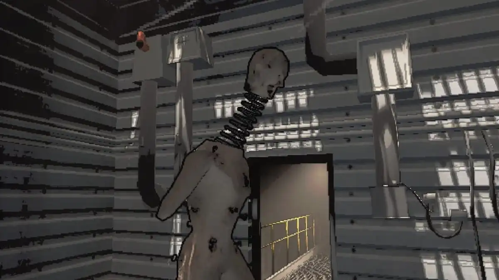
A human doll-like creature with a sort of spring connecting its head. It only moves when not seen so if you see one then keep staring at it while backing off. They can’t go through doors initially but may break the door if chasing a player, they can be very fast if undetected so make sure to keep your back towards a wall if being chased.
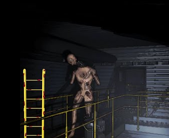
You can slowly go past them if you’re staring at them and then walk around them. If you are trying to lock them out using secured doors then I would suggest making sure that other doors are locked. They can easily kill someone that is on the other side of the secure door if you close the one they are staring the coil head from and there’s a way for them to go around to chase the player.
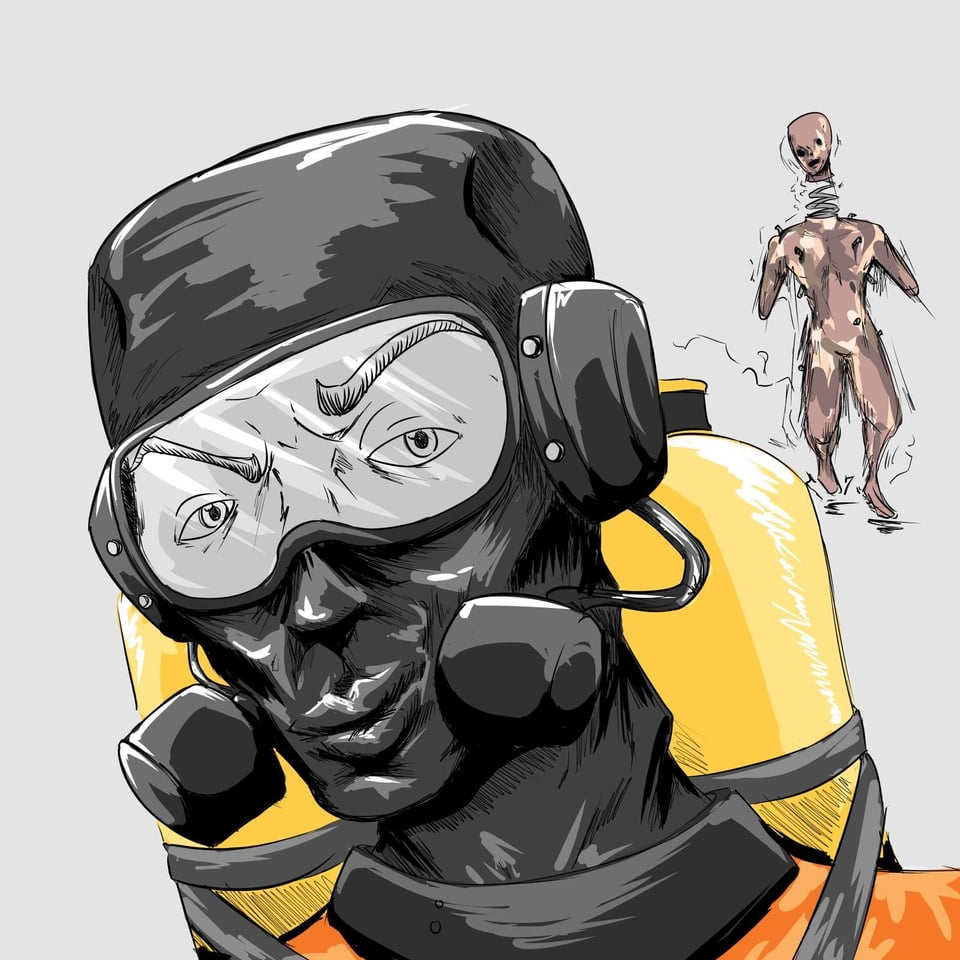
>Eyeless Dogs
Name is pretty self-explanatory. They look like a dinosaur with a huge mouth. However, they are blind so they can’t see and can be neutralized if you stay quiet and don’t move. You can crouch past them once they’ve gone far away to not hear your steps. Their hearing is pretty good so make sure to not make too much noise or talk to others, if you have a sensitive mic then it may detect your key presses on your keyboard. If it detects you, it will start growling and charge in the direction where it heard the noise; Try to drop any two handed item and dodge its attack by sprinting away from the dash. It has been seen to spawn as early as 1 PM and as a pack of three as early as 6 PM.
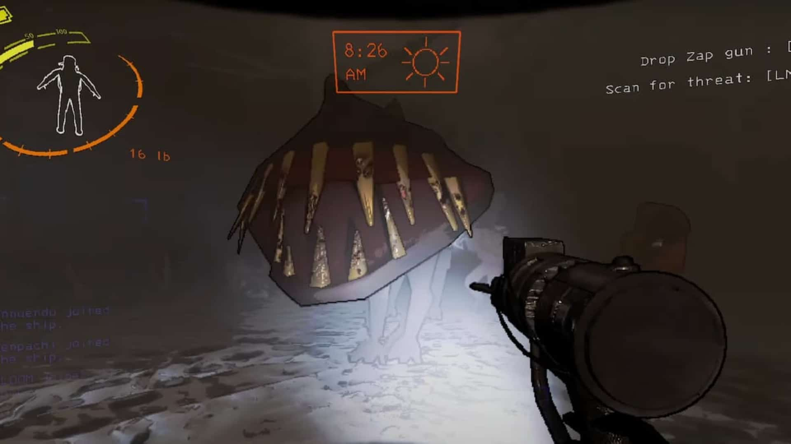
They can start to camp the ship if you don’t stay aware of your surroundings and keep using the radio to communicate with the team. Make sure to close the door when threats are nearby as the blind dogs can enter the ship and eat you. If they are right outside the ship waiting at the closed door then you can either use the loud horn to distract them towards the front of the ship or you can actually order an item to have the drop pod lure them away from the ship when it lands.
>JESTER
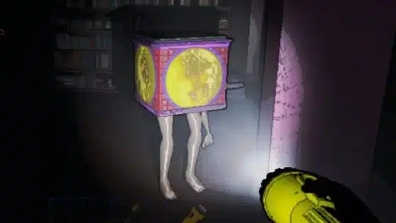
The Jester is only found on high-level moons. It appears to be a jack-in-the-box with legs and an arm sticking out of it. It may run around in your vicinity and appear passive initially, but eventually it will run up to you and start winding up its mechanism.
The Jester will spend some time winding up (about 30 seconds, in our experience). During this time, all players should leave the building as quickly as possible.
Once the Jester finishes winding up, a giant skull will pop out and advance toward you, killing you instantly. It will then pursue the nearest player inside the building, becoming faster and faster, and will not stop until everyone has left or is dead.
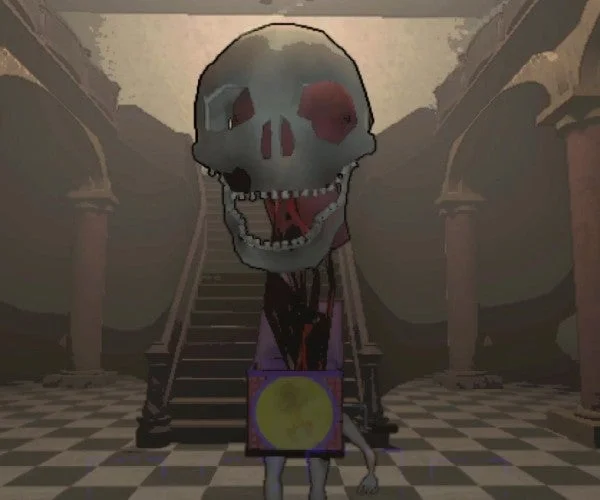
>Hygrodere
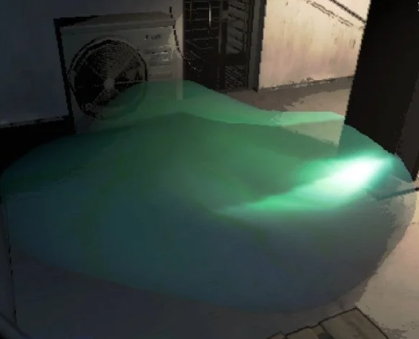
A slow, colorful and easy to see snail-paced blob, not that dangerous if you’re being careful but dissolves anything that steps in it. It will slowly chase a player if spotted however since it can not jump and moves slowly you can easily just jump on an elevated platform to survive or even try jumping over it if trapped. Also, it is suggested to not attack it as it will just make it move even faster.
>Baboon Hawk
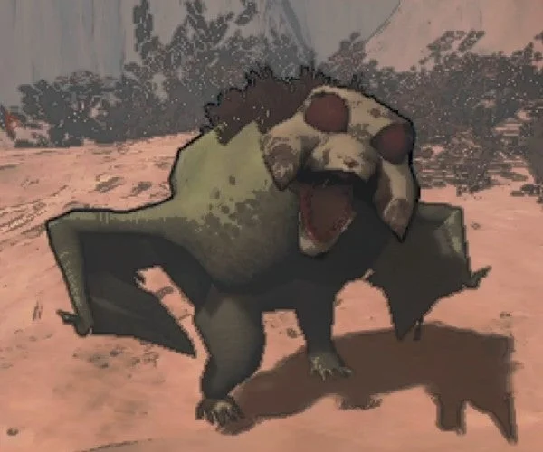
From what I know is that they spawn outside and are dangerous in groups. They are not hostile at a distance when they’re alone however, when there’s a pack of them they will start to be aggressive. They might be able to also steal your loot like a hoarding bug I believe. According to the logs, they may attack the eyeless dogs when they are roaming around as a pack. I have noticed that they are scared of the light and will back off if you shine their flashlight at them unless they are in a pack.
>Bunker Spiders
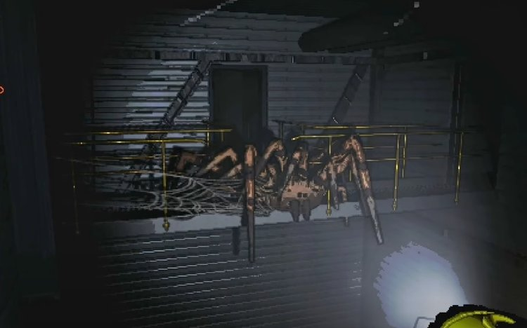
A slow but hard to beat spider that is usually roaming an area. If you see webs then be wary that the spider may be nearby and it can also traverse through vents as well. It can kill you and your team with ease. You can destroy the webs but remember that the spider can kill you in a single hit sometimes. The spider is rumored to have a short cone of vision however, if you step on a web it will target you and attack you.
>MASK/HAPPY OR SAD
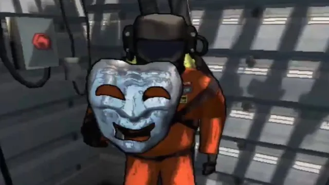
It will usually appear as an item or as an enemy, if it spawns as an item on the map, it can be sold, but be careful if you try to equip it, it may not do anything or it may possess you and your body will no longer be yours.
>Leviathan
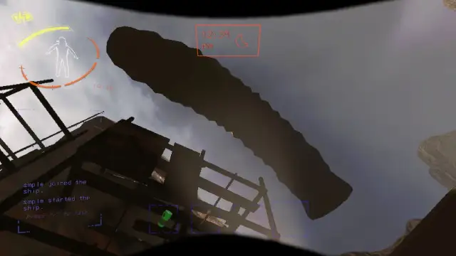
Huge worm that is underground. You can usually hear the worm at the start of the day as it will come out of the ground to serve as a warning. Afterwards it can spawn at any time after 3 PM so if you hear some weird noise or the ground is shaking underneath you then it is advised to just drop any heavy loot and just run before it comes out of the ground and swallows you.
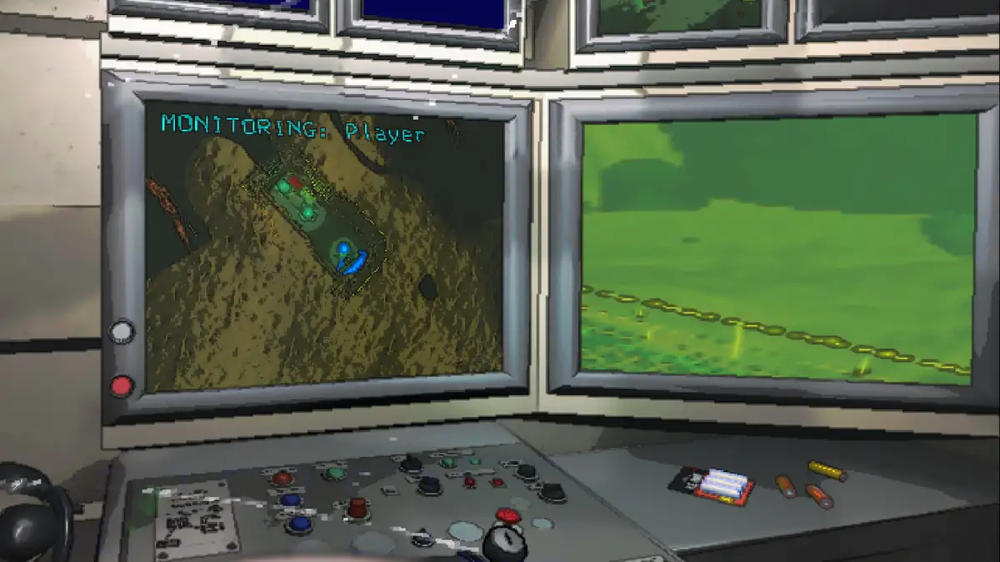
You would need help from your teammate checking the radar if they see a huge red dot outside as it can help letting you know that the worm is coming for you as there isn’t that much time to react before it comes out of the ground. It has a huge attack radius and can easily eat multiple players along with their items. It doesn’t leave behind any corpses and they can not be teleported either.
>Circuit Bees
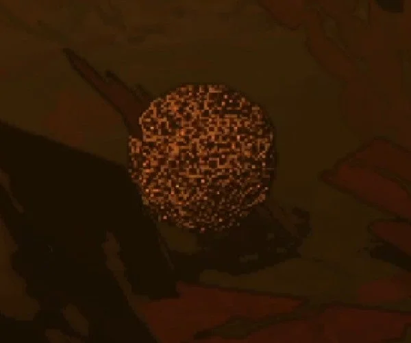
A swarm of bees, will only attack if disturbed or their hive is stolen. The hive can be stolen to be sold for credits. This is a risky tactic that you can do before leaving as it will chase you if you have the hive. Just have someone run close to distract the bees while the other person takes the hive and gets it to the ship before leaving. Make sure to not be spotted as they will chase and attack you if they find the hive. If you have stolen the hive then they will not stop attacking the person that they have targeted until they’re dead. Either enter the facility or the ship and locking the door. It’s also the same if you approach the circuit bees that do not have a hive as they will chase you indefinitely as well.
>Snare Flea
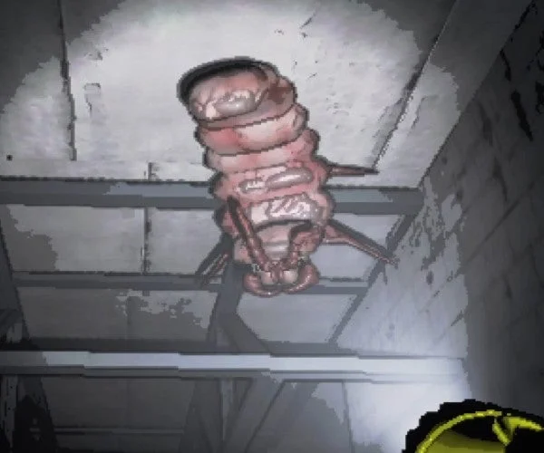
A worm-like creature that are usually hanging out on the ceiling. You can usually hear them opening vents or a hissing sound when chasing a player. They will latch onto any unsuspecting visitors. If you’re solo then try to make your way outside of the facility, if with a team then can ask a teammate to hit you with a shovel (No friend would ever resist that) so that it is removed and then hit it two more times to kill it. Your voice is muffled when its latched to you and you will also drop any items that you have in your inventory.
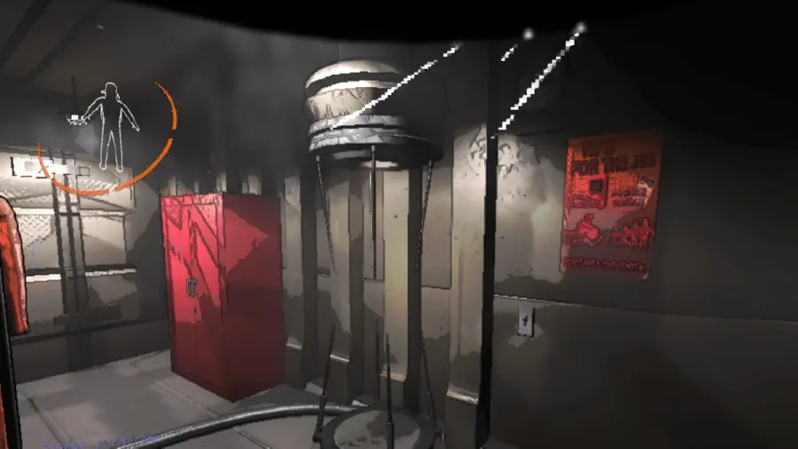
You can also remove it if you are teleported or you leave the facility which would kill the snare flea, I have also noticed that it leaves you on critical condition if you’re playing solo.
>Thumper
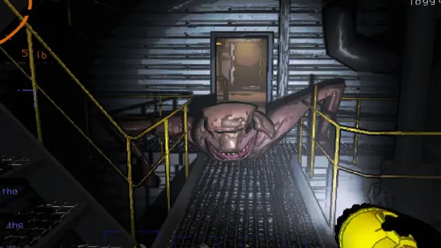
A weird looking lizard with 2 legs that is fast in long corridors and very loud. If you hear thumping noises then be aware and make sure to not run in a straight line if you encounter it. It does take a few hits before you die so you can try going for the exit or run past them, closing the door won’t help as they can just open the door while chasing.
>Ghost Girl
The Ghost Girl can be found on distant moons that are more expensive to get to. She only haunts one player at a time, meaning if you see her, you've been chosen as her victim. Nobody else can see her, not even if you're spectating the haunted player.
The girl may appear standing still for a short time, but if she starts skipping toward you, you'll need to run away as fast as possible. If she catches you, she will remove your head, killing you instantly.
>Nutcracker
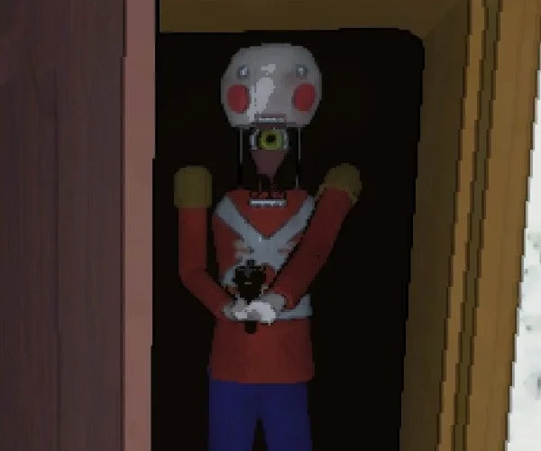
The Nutcracker is a wooden doll wielding a shotgun. As it walks around the level, it will occasionally stop and raise its head, exposing a yellow eye where its neck should be. It will then scan the vicinity, making unsettling wooden clacking noises.
If the Nutcracker detects movement while it is scanning, it will pursue and shoot the culprit, even if they subsequently stop moving. However, it is possible to damage the Nutcracker while the eye is exposed. You can also steal the Nutcracker's shotgun by pressing [E] when you're close to it.
>Spore Lizard
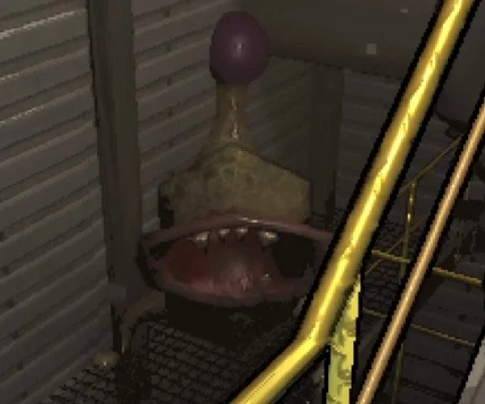
The Spore Lizard is a four-legged creature with a huge round mouth and a purple orb at the end of its tail. If you encounter it running through the corridors, it's likely to stop, open its mouth at you, and wag its tail. This creature isn't much of a threat, instead behaving more like a playful puppy.
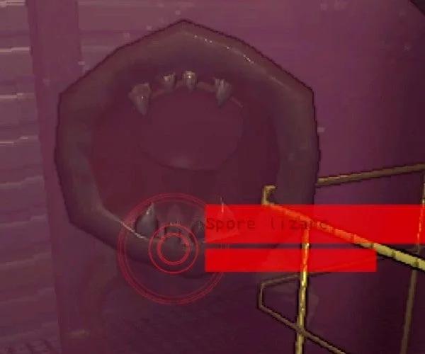
If you get close to them, they will unleash a pink mist, which will obscure your vision but not harm you otherwise. Get closer, and they will give you a mild warning bite.